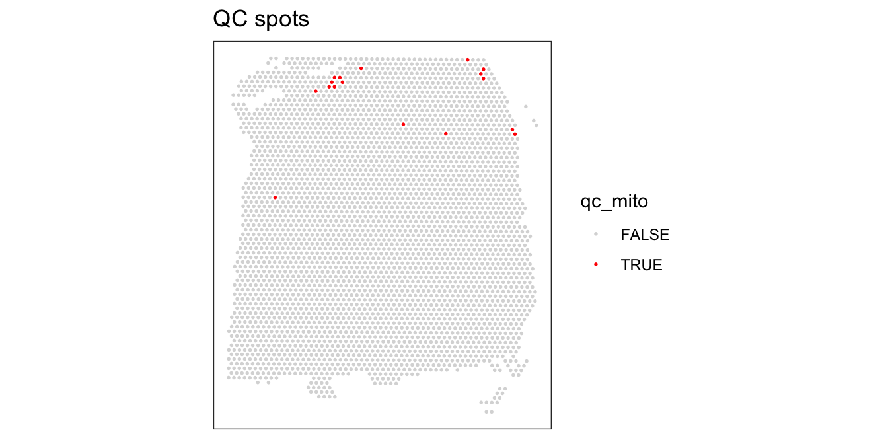

Chapter 3 Practical session 2
In this session we will demonstrate the implementation of the methods discussed earlier and will particularly focus on the most common analysis routines in STx: QC, data visualisation and clustering analysis always inside the interoperable Bioconductor environment.
Load packages
ggspavisis a Bioconductor package that includes visualization functions for spatially resolved transcriptomics datasets stored inSpatialExperimentformat from spot-based (e.g., 10x Genomics Visium) platforms (Weber and Crowell (2022)).scateris also a Bioconductor package that is a selection of tools for doing various analyses of scRNA-seq gene expression data, with a focus on quality control and visualization which has extended applications to STx data too. It is based on theSingleCellExperimentandSpatialExperimentclasses and thus is interoperable with many other Bioconductor packages such asscran,scuttleandiSEE.
3.1 Spot-level Quality Control
Spot-level quality control (sQC) procedures are employed to eliminate low-quality spots before conducting further analyses. Low-quality spots may result from issues during library preparation or other experimental procedures, such as a high percentage of dead cells due to cell damage during library preparation, or low mRNA capture efficiency caused by ineffective reverse transcription or PCR amplification. Keeping these spots usually leads to creating problems during downstream analyses.
We can identify low-quality spots using several characteristics that are also used in QC for scRNA-sq data, including:
- library size (total of UMI counts per spot is going to be different due to sequencing -like different samples in a bulk RNA-seq- or due to number of cells in the spot)
- number of expressed genes (i.e. number of genes with non-zero UMI counts per spot)
- proportion of reads mapping to mitochondrial genes (a high proportion indicates putative cell damage)
Low library size or low number of expressed features can indicate poor mRNA capture rates, e.g. due to cell damage and missing mRNAs, or low reaction efficiency. A high proportion of mitochondrial reads indicates cell damage, e.g. partial cell lysis leading to leakage and missing cytoplasmic mRNAs, with the resulting reads therefore concentrated on the remaining mitochondrial mRNAs that are relatively protected inside the mitochondrial membrane. Unusually high numbers of cells per spot can indicate problems during cell segmentation.
The idea of using scRNA-seq QC metrics in STx data comes from the fact that if we remove space and count each spot as a single cell, the two datasets share common features. However, the expected distributions for high-quality spots are different (compared to high-quality cells in scRNA-seq), since spots may contain zero, one, or multiple cells.
A few publications for further reading that can help you understand the quality controls: McCarthy et al. (2017) and Amezquita et al. (2020).
3.1.1 Plot tissue map
The DLPFC dataset we will be using comes with manual annotations by the authors Maynard et al. (2021). We can plot the tissue map with and without the annotations to get a complete view.
## Plot spatial coordinates without annotations
plotSpots(spe)
## Plot spatial coordinates with annotations
plotSpots(spe,
annotate = "ground_truth")
3.1.2 Calculating QC metrics
We will now calculate the three main QC metrics described above using methods from the scater (McCarthy et al. 2017) package and our own functions INSERT LINK OR CITATION HERE.
So far, the dataset contains both on- and off-tissue spots. For the analysis though we are only interested in the on-tissue spots. Therefore, before we run any calculations we want to remove the off-tissue spots.
NOTE: the on- or off-tissue information for each spot can be found in the colData of the spe object and in the in_tissue column where 0 = off-tissue and 1 = on-tissue.
## [1] 33538 4992## [1] 33538 3639The next thing we need to do before we make decisions on how to quality “trim” the dataset is to calculate the percentage per spot of mitochodrial gene expression and store this information inside the colData.
## Fetch mitochondrial gene names
is_mito <- grepl("(^MT-)|(^mt-)", rowData(spe)$gene_name)
rowData(spe)$gene_name[is_mito]## [1] "MT-ND1" "MT-ND2" "MT-CO1" "MT-CO2" "MT-ATP8" "MT-ATP6" "MT-CO3" "MT-ND3" "MT-ND4L" "MT-ND4" "MT-ND5" "MT-ND6" "MT-CYB"## Calculate per-spot QC metrics and store in colData
spe <- addPerCellQC(spe, subsets = list(mito = is_mito))
head(colData(spe))## DataFrame with 6 rows and 13 columns
## barcode_id sample_id in_tissue array_row array_col ground_truth cell_count sum detected subsets_mito_sum subsets_mito_detected
## <character> <character> <integer> <integer> <integer> <character> <integer> <numeric> <numeric> <numeric> <numeric>
## AAACAAGTATCTCCCA-1 AAACAAGTATCTCCCA-1 sample_151673 1 50 102 Layer3 6 8458 3586 1407 13
## AAACAATCTACTAGCA-1 AAACAATCTACTAGCA-1 sample_151673 1 3 43 Layer1 16 1667 1150 204 11
## AAACACCAATAACTGC-1 AAACACCAATAACTGC-1 sample_151673 1 59 19 WM 5 3769 1960 430 13
## AAACAGAGCGACTCCT-1 AAACAGAGCGACTCCT-1 sample_151673 1 14 94 Layer3 2 5433 2424 1316 13
## AAACAGCTTTCAGAAG-1 AAACAGCTTTCAGAAG-1 sample_151673 1 43 9 Layer5 4 4278 2264 651 12
## AAACAGGGTCTATATT-1 AAACAGGGTCTATATT-1 sample_151673 1 47 13 Layer6 6 4004 2178 621 13
## subsets_mito_percent total
## <numeric> <numeric>
## AAACAAGTATCTCCCA-1 16.6351 8458
## AAACAATCTACTAGCA-1 12.2376 1667
## AAACACCAATAACTGC-1 11.4089 3769
## AAACAGAGCGACTCCT-1 24.2223 5433
## AAACAGCTTTCAGAAG-1 15.2174 4278
## AAACAGGGTCTATATT-1 15.5095 4004After calculating the necessary metrics, we need to apply some cut-off thresholds for each metric to perform QC over each spot. What is important to remember here is that each dataset might need slightly different cut-off values to be applied. As a result we cannot rely on identifying a value to use every time and we need to rely on plotting these metrics and making a decision on a dataset-by-dataset basis.